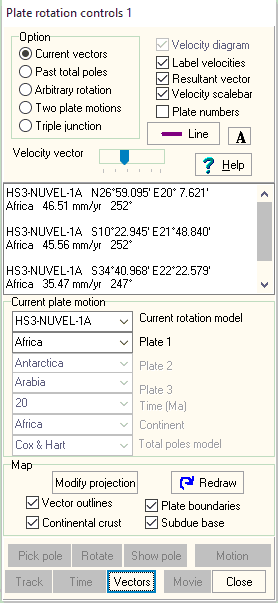

Plate rotations using Current Vectors

- Option, pick current vectors radio button.
- Pick "Current rotation model" to use.
- Pick Plate 1.
- Select Vectors button on the bottom of the form.
- Double click on the map where you want the plate motion
- Numerical results will appear in the memo window.
- Label velocities checkbox will put the velocity at the read of the vector (in the direction of motion).
- You can have a velocity scalebar.
- Show Pole button on the bottom of the form shows the Euler Pole for the plate.